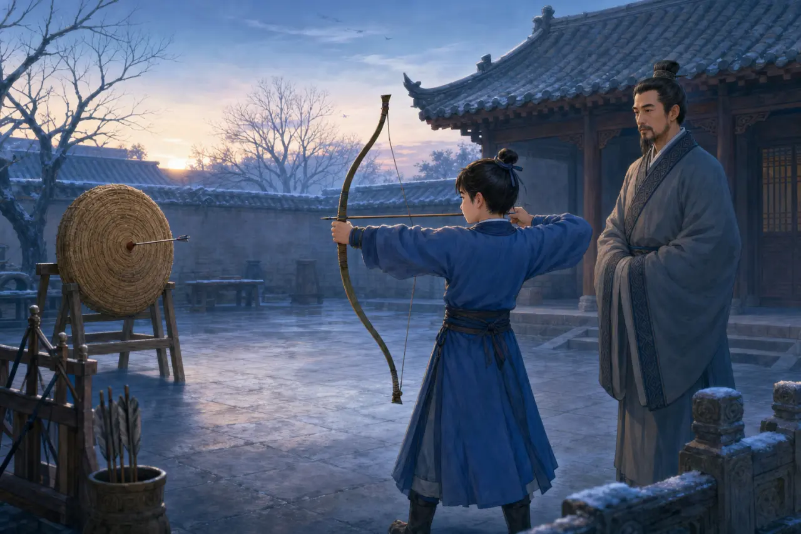
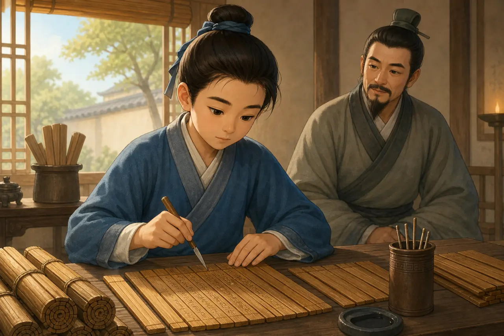
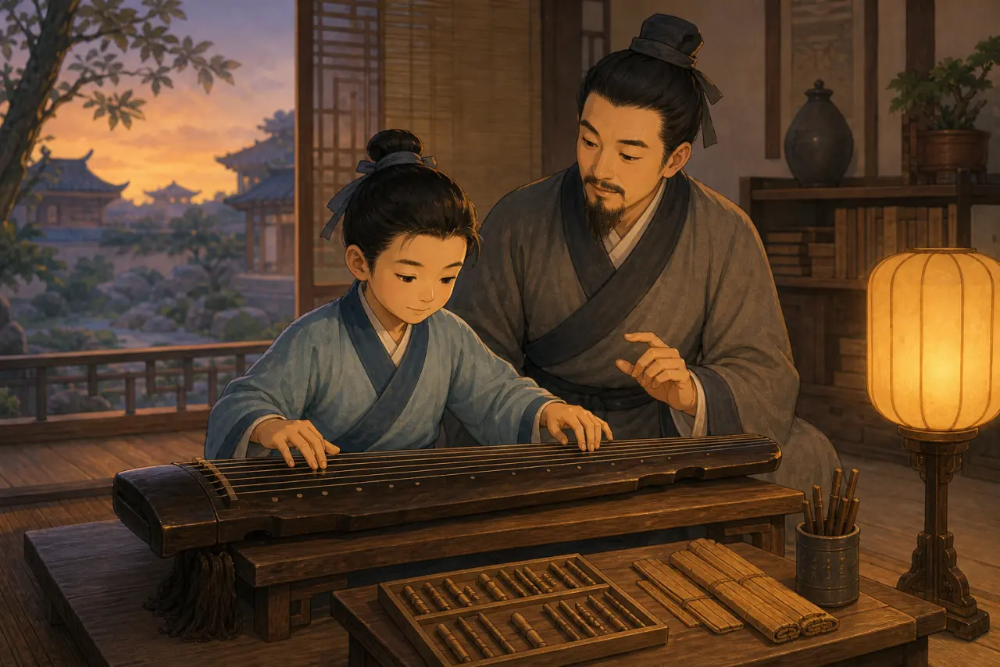
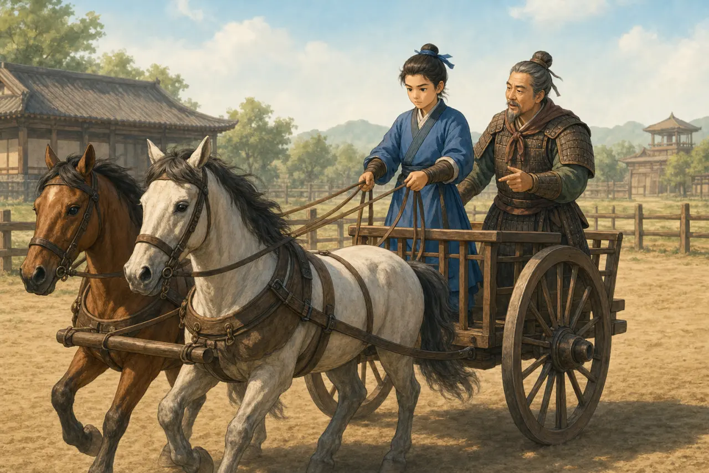

六艺：古代学生真的一天学六门课吗？
The Six Arts: Did Ancient Students Really Study All Six in One Day?
Page 1
先问问这幅画
Start by Questioning the Picture

The young archer is a modern imagined figure. We do not know his name, age, teacher, or practice time.
画里天刚亮，一个少年拉开弓，身后的大人安静地看着。我们很容易接着编下去：他十三岁，父亲天没亮就叫他起床，第一箭射偏了，第二箭正中靶心，父亲还说了一句让他终身难忘的话。
可是，这些细节有出处吗？没有。我们不知道画中少年是谁，也没有古书记下这样一个清晨。它是一幅现代想象图，可以让我们看见弓箭和练习，却不能证明某个春秋时代学生的一天怎样开始。
这正好给我们一个研究“六艺”的方法：先把好看的故事放在一边，看看古书真正写了什么，再问古书描绘的是日常生活、教育理想，还是后人整理出来的制度。
The sun is rising in the picture. A boy draws his bow while an older man watches. It is easy to keep inventing: the boy is thirteen, his father woke him before dawn, his first arrow missed, and his second arrow struck the center. Then his father said something the boy remembered for the rest of his life.
But where did those details come from? They did not come from an ancient record. We do not know who the boy is, and no old book describes this morning. The picture is modern artwork. It can help us see a bow and a practice yard, but it cannot prove how one student’s day began during the Spring and Autumn period.
That gives us a good method for studying the Six Arts. First, set the dramatic story aside. Look at what the old texts actually say. Then ask whether a passage describes everyday life, an educational ideal, or a system arranged by later writers.
Page 2
六个字从哪里来？
Where Did the List Come From?
“礼、乐、射、御、书、数”这六个字，清楚地列在《周礼》里。《周礼》是一部安排官职和制度的古代礼书。其中写到一位叫“保氏”的官员教养“国子”，并教他们六艺：“一曰五礼，二曰六乐，三曰五射，四曰五驭，五曰六书，六曰九数。”书中另一处也把礼、乐、射、御、书、数列为教化内容。
这条记载非常重要，但不能把它当成一张从西周或春秋时期保存下来的学校课程表。《周礼》的成书历史很复杂。许多学者认为，它的主要制度设计反映了战国时代的思想，后来又经过整理。书名里的“周”，不等于书中每一项制度都能证明西周学校每天真的这样上课。
因此，比较准确的说法是：六艺是古代礼制文献保存下来的一种教育分类和理想。它影响深远，却没有告诉我们“十三岁学生每天几点射箭、几点弹琴”。
The six-part list - ritual, music, archery, chariot driving, writing, and calculation - appears clearly in the Rites of Zhou. This ancient book describes an ideal system of offices and institutions. One passage assigns an official called the Baoshi to educate the “sons of the state.” It then divides each of the Six Arts into smaller groups. Another passage places the same six arts inside a wider plan for educating the people.
This is important evidence, but it is not a school schedule saved from the Western Zhou or Spring and Autumn period. The Rites of Zhou has a complicated history. Many scholars think much of its system reflects ideas from the Warring States period and was organized later. The word Zhou in the title does not prove that every office and lesson worked exactly this way in an early Zhou school.
A careful conclusion is that the Six Arts were an influential way of organizing educational skills and ideals. The text does not tell us that every thirteen-year-old practiced archery at sunrise and played music after dinner.
Page 3
六艺不是六本课本
The Six Arts Were Not Six Textbooks
“艺”在这里更接近需要学习和练习的本领。六个名称每一个都很大，《周礼》甚至说“五礼、六乐、五射、五驭、六书、九数”，说明它们下面还有不同项目，不是六节各四十五分钟的现代课堂。
“礼”不只是说“请”和“谢谢”，还包括祭祀、宾客往来、丧礼、军事等不同场合的仪式和秩序。“乐”也不只是独自弹一张琴，而可能包括歌唱、器乐、舞蹈和礼仪中的集体表演。礼和乐帮助人知道什么时候做什么、怎样与别人一起行动，但它们也维护了古代社会的身份和等级，不能只说成温柔的“礼貌课”和“音乐课”。
“射”是射箭，“御”是驾驭马车，不是现代意义的骑马课。弓箭和马车既能用于礼仪活动，也和贵族的军事生活有关。“书”和“数”则把读写、文字知识与计算放进这套教育里。六艺把仪式、音乐、身体训练、交通与战争技能、文字和数量放在一起，和今天把语文、数学、体育、音乐分开的方式很不一样。
Here, an “art” means a skill or practice that must be learned. Each label covers a large field. The Rites of Zhou itself lists several parts within each art, so this was nothing like a modern school day with six forty-five-minute classes.
Ritual meant much more than saying “please” and “thank you.” It included ceremonies and rules for worship, guests, mourning, military events, and other parts of public life. Music was broader than one person playing a qin. It could include singing, instruments, dance, and group performance within ritual. These arts taught people how to act together, but they also supported rank and order in an unequal society. Calling them simply “manners class” and “music class” would hide too much.
Archery meant using a bow. Chariot driving meant controlling a horse-drawn vehicle, not taking a modern riding lesson. Both could be used in ceremonies and in the military life of the elite. Writing and calculation brought literacy, knowledge of written forms, numbers, and reckoning into the same educational picture. The Six Arts brought ritual, music, physical training, military and travel skills, writing, and math into one educational vision - one very different from a modern school schedule.
Page 4
竹简上的字是写上去的
Words on Bamboo Were Written in Ink

This imagined scene places a knife in the boy’s hand. Bamboo slips were usually written on in ink; a knife could shave away mistakes.
第二幅图里，少年面对一排竹片，手里拿着一把小刀。旧故事说他用刀把《诗经》一字一字刻上去，这并不是古代竹简最常见的书写方式。考古发现的许多竹简是用毛笔蘸墨写成的，再用绳子编联起来。写错时，刀可以削去竹片表面的一层，然后重新书写；它更像古人的橡皮和修整工具。
“书”也不能只缩小成“抄一首诗”。它与识字、书写和文字分类有关，是阅读命令、记录事情和处理政务的基础。我们并不知道一个少年是不是在这间屋里抄《诗经》，也不知道旁边的大人是谁，所以这幅画只能看作想象，不能看成古代课堂的真实记录。
一个小小的刀笔区别很重要。如果为了让故事有画面，就把“用笔写”改成“用刀刻”，画面虽然更有戏，孩子学到的历史却错了。
In the second picture, a boy sits before rows of bamboo slips with a small knife in his hand. The old article claimed that he was carving lines from the Book of Songs into the bamboo. That was not the usual way bamboo books were written. Many ancient bamboo manuscripts found by archaeologists carry ink brushed onto the surface. Their slips were then tied together with cords. A knife could shave away a mistaken character so the writer could write again. It worked more like an eraser and repair tool.
Writing was also more than copying one poem. It included literacy, written forms, and the knowledge needed to read instructions, keep records, and help run a government. We do not know that a boy copied the Book of Songs in this room, or who the adult beside him might be. The scene must be treated as imagined, not as a true record of an ancient lesson.
This small difference between a knife and a brush matters. Carving sounds dramatic. But if a story changes “write with a brush” into “carve with a knife” just to make the scene exciting, the child remembers the wrong history.
Page 5
琴和算筹只是两个窗口
A Qin and Counting Rods Are Only Two Windows

The qin, bamboo slips, and counting rods share one imagined picture. That does not prove both lessons happened on one evening.
第四幅图把琴、竹简和一排算筹放在同一张桌上。算筹是古人用来表示数字和帮助计算的小棍。它们让“乐”和“数”变得容易看见，却不证明这两门一定安排在同一个傍晚。
《周礼》写的是“六乐”和“九数”，说明两者都比“弹一首琴曲”和“做几道加法题”宽。音乐与礼仪、舞蹈和集体秩序相连；数则可以服务于测量、分配、工程和管理。后世保存下来的数学传统包含田地面积、粮食交换、工程和方程等问题，但不能把后世数学书的每一道题都倒推成早期六艺课堂的固定作业。
这幅画最适合提出一个问题：为什么培养国家需要的人，既要练耳朵和节奏，也要练数量和计算？古代的回答不一定是今天的答案，但把艺术和数字放在同一种教育理想里，本身很值得注意。
The fourth picture places a qin, bamboo slips, and rows of counting rods on one table. Counting rods were small sticks used to show numbers and help with calculations. The objects make music and math easy to see, but they do not prove that both lessons happened on the same evening.
The Rites of Zhou speaks of several kinds of music and calculation. Music reached into dance, ceremony, and group order. Numbers could be useful for measuring, sharing goods, building, and managing supplies. Later Chinese mathematics included problems about fields, grain, construction, and equations, but we cannot move every problem from a later math book backward into an early Six Arts classroom.
The picture is best used to ask a question: Why might someone preparing to serve a state need both rhythm and numbers? Ancient answers may not be our answers, but it is still interesting that artistic and mathematical practice belonged inside one educational ideal.
Page 6
为什么还要学驾车？
Why Learn to Drive a Chariot?

The image shows that yu means driving. Its horses, vehicle, and people are artistic choices, not an exact Zhou training scene.
今天的学生不会把驾马车列进课程，所以“御”最容易让人感到陌生。在商周时代，马拉战车用于战争，也代表军事力量和精英身份。能够让马匹、车轮、方向和速度配合，是一种复杂的实用技能。
第三幅图用两匹马和一辆车帮助我们辨认“驾车”，但它不是周代战车和训练场的准确复原。古代车马的数量、车形和用途会随时代与场合改变。画中老师的身份、话语和动作也都是想象，不能再让他讲一段古书里没有的“读懂马心”对话。
射和御放在六艺里，还提醒我们：这套教育不是只在安静房间里读书。身体的协调、礼仪表现和军事能力，对某些古代统治阶层都很重要。
Students today do not place chariot driving on their class schedules, so this art may feel the strangest. During the Shang and Zhou dynasties, horse-drawn chariots were used in war and represented military power and elite status. Coordinating horses, wheels, direction, and speed was a difficult practical skill.
The third picture uses two horses and a vehicle to make chariot driving visible, but it is not an exact reconstruction of a Zhou chariot or training ground. The number of horses, shape of vehicles, and ways they were used changed by time and situation. The teacher’s identity, movements, and words are imagined too. We should not give him a speech about “reading a horse’s mind” and pretend an ancient source recorded it.
Archery and chariot driving remind us that this educational ideal did not live only in a quiet reading room. Physical coordination, ritual display, and military ability all mattered to some members of the ancient ruling class.
Page 7
谁能学六艺？
Who Had the Chance to Learn?
《周礼》讲“保氏”时，明确说他教养“国子”。这个词通常指贵族或高级官员的子弟。另一段又把六艺放进教化“万民”的制度理想里。两处放在一起看，说明六艺既可以是一种广泛的教化语言，也有面向精英子弟的具体训练。
但这仍然不能证明每个家庭的孩子都能进入同样的学校，得到同样的时间、器材和老师。射箭需要弓和场地，驾车需要马和车，礼乐训练也需要资源。古代教育受到身份、财富和性别限制；《礼记·射义》甚至直接把射箭说成男子之事。
所以，标题如果写“春秋时期的学生都学什么”，范围就太大了。更谨慎的说法是：古代礼书怎样设想某些国子和受教育者应该具备哪些本领。教育理想可以影响很多人，却不等于人人实际享有相同教育。
In the passage about the Baoshi, the Rites of Zhou says he taught the guozi, usually understood as sons of nobles or high officials. Another passage puts the Six Arts inside a broad plan to educate “all the people.” Together, these passages show that the Six Arts could be a wide language of education while also describing special training for elite sons.
They do not prove that every child entered the same school or received the same teachers, time, and equipment. Archery needed bows and space. Chariot driving needed horses and vehicles. Ritual and music also required resources. Education in ancient China was shaped by wealth, rank, and gender. The Book of Rites even describes ritual archery as a male activity.
That is why “what all students studied in the Spring and Autumn period” is too broad a title. A safer question is what ancient ritual texts thought certain students and future leaders should learn. An ideal can influence a culture without giving every person an equal chance to reach it.
Page 8
射箭怎样和品格连起来？
How Did Archery Become a Lesson in Character?
旧稿虚构了一位父亲说：“刚才是手在射，后来是心在射。”古书没有这句话。不过，后来的《礼记·射义》确实把射箭和自我检查联系在一起。它说射箭的人先要端正自己，箭没有射中，不去怨恨胜过自己的人，而是回来检查自己。
这比虚构金句更有意思。射箭当然需要力量和技术，但在礼仪性的解释里，人们还观察姿态、节奏以及面对输赢的表现。技能被用来讨论品格，是后世理解六艺的重要方向。
我们也要看见它的历史边界。《射义》描述的是带有等级、选拔和男性角色的礼制世界，不是一场人人平等的现代体育课。读古书时，可以理解它为什么重视自省，同时不必照搬其中所有社会规则。
The old story invented a father saying, “First your hand was shooting; then your heart was shooting.” No ancient source preserves that line. However, a chapter on archery in the Book of Rites really does connect shooting with self-examination. It says that an archer should first correct himself. If his arrow misses, he should not blame the person who beat him. He should return and look at himself.
That idea is more interesting than an invented slogan. Archery certainly required strength and technique, but ritual writers also watched posture, rhythm, and behavior after winning or losing. Using a skill to think about character became an important way later readers understood the Six Arts.
The idea still has a historical boundary. The chapter describes a ritual world shaped by rank, selection, and male roles. It was not a modern gym class where everyone entered as an equal. We can understand why the text valued self-examination without copying every social rule around it.
Page 9
“六艺”后来还有另一个意思
“Six Arts” Later Meant Something Else
古书里的同一个词，走过很长时间以后会改变。“六艺”后来还可以指经典学习的六个门类，通常与《诗》《书》《礼》《乐》《易》《春秋》相联系，也常被称为“六经”。这时谈的是经典文本，不再只是礼、乐、射、御、书、数六种实践本领。
所以，看见“六艺”不能马上认定只有一个答案。要先看文章在谈哪个时代、哪一种教育：是在讲《周礼》的六项本领，还是在讲后来的经典传统？把两种意思分开，许多历史问题才不会混在一起。
Words change as they travel through history. In later writing, “Six Arts” could also refer to six areas of classical learning connected with Poetry, Documents, Rites, Music, Changes, and the Spring and Autumn Annals. These are often called the Six Classics. In that setting, the phrase points toward classical texts rather than only the six practical arts listed in the Rites of Zhou.
When we see “Six Arts,” we should not assume it has one answer forever. We need to ask which period and which kind of education the writer means. Is the passage about ritual, music, archery, chariot driving, writing, and calculation? Or is it about the later classical tradition? Keeping the two meanings apart prevents a great deal of confusion.
重新设计一张课程表
Design a New Schedule
现在再看开头的少年。他不再是一个有姓名、有年龄、有父亲台词的“历史人物”，而是画家用来帮助我们提问的想象角色。我们真正能从资料中看到的，是一套把礼仪、音乐、射箭、驾车、文字和计算放在一起的古代教育理想，以及这套理想背后的资源和身份限制。
如果今天请你设计“新的六艺”，你会保留什么，又会加入什么？也许你会留下音乐、运动、读写和数学，再加入科学、合作、照顾环境或辨别网络信息。这个问题没有标准答案，但它延续了六艺最值得思考的一点：教育究竟要帮助一个人成为什么样的人，又要让谁有机会学习？
Look at the archer from the opening again. He is no longer a historical boy with a known age, a daily schedule, and a father’s exact words. He is an imagined figure who helped us ask a question. The evidence gives us something different: an ancient educational ideal that joined ritual, music, archery, chariot driving, writing, and calculation, along with the limits of rank and resources around that ideal.
If you had to design a new set of Six Arts today, what would you keep and what would you add? You might keep music, movement, literacy, and math, then add science, teamwork, care for the environment, or the ability to judge information online. There is no single right list. The question continues the most useful part of the Six Arts: What kind of person should education help someone become, and who should have the chance to learn?